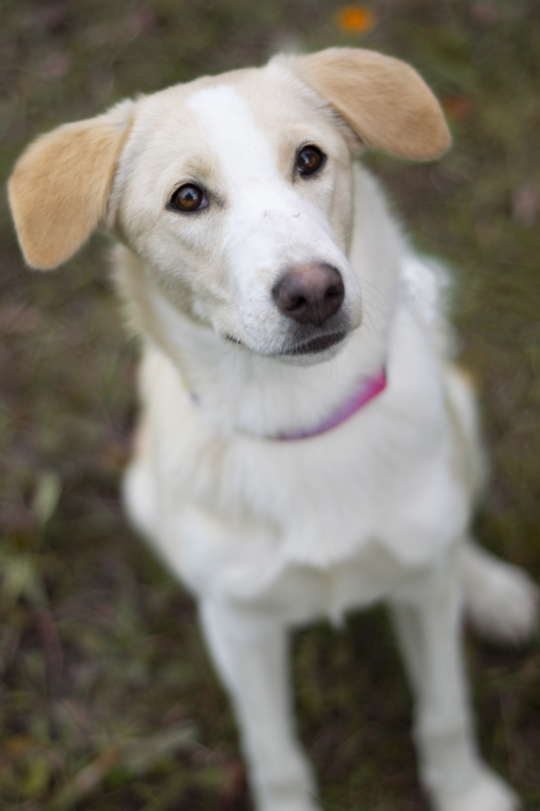
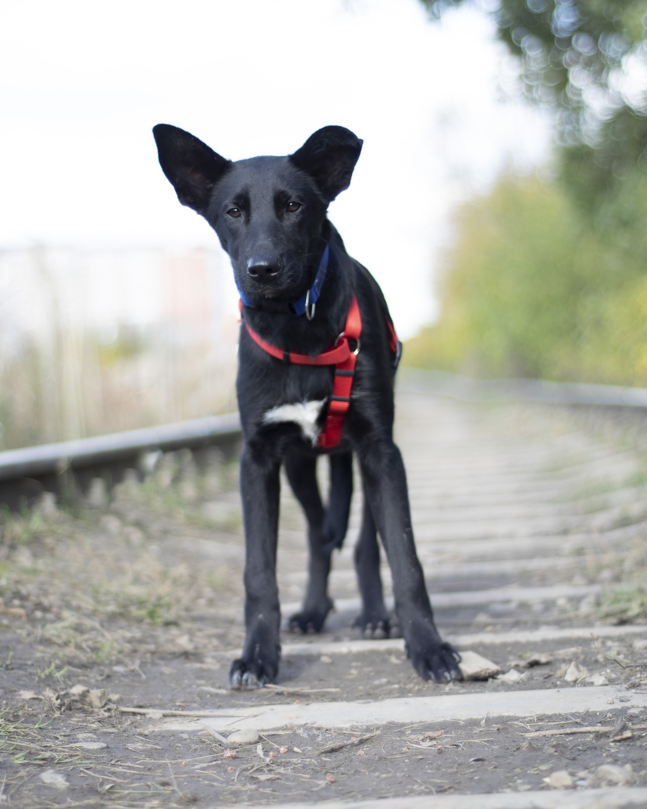
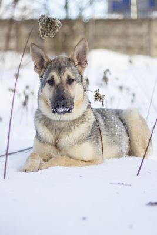
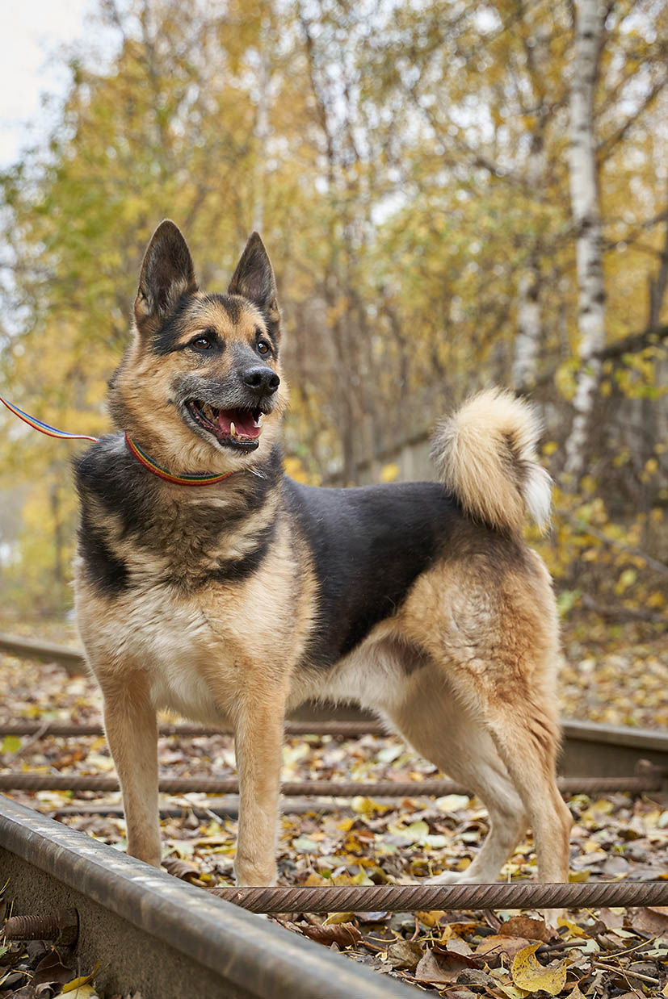
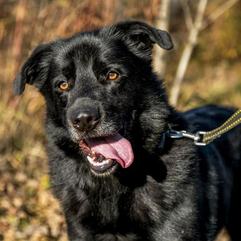

Активна, очень сообразительная и невероятно обаятельна.
Френни умница — отлично знает поводок, приучена к амуниции и знакома с правилами поведения на прогулке.
Она не прочь продемонстрировать свою активность и открытость миру.
Френни подойдёт в семью с любым составом , может быть это будете именно Вы?
Возраст 7 месяцев, привита, стерилизована, здорова.
Френни
Активна, очень сообразительная и невероятно обаятельна.
Френни умница — отлично знает поводок, приучена к амуниции и знакома с правилами поведения на прогулке.
Она не прочь продемонстрировать свою активность и открытость миру.
Френни подойдёт в семью с любым составом , может быть это будете именно Вы?
Возраст 7 месяцев, привита, стерилизована, здорова.

Малыш Кевин из тех щенков, кто стойко и смирно принимает все, что приготовила для него жизнь.
Он не сопротивляется познанию чего- то нового.
На прогулках ему любопытно всё, как настоящему ребёнку.
Кеви очень нежный и трепетный, а в пугающей ситуации ищет защиту в человеке.
Подарите этому чуду дом!
Кевину 5 месяцев, готовится к кастрации.
Кевин
Малыш Кевин из тех щенков, кто стойко и смирно принимает все, что приготовила для него жизнь.
Он не сопротивляется познанию чего- то нового.
На прогулках ему любопытно всё, как настоящему ребёнку.
Кеви очень нежный и трепетный, а в пугающей ситуации ищет защиту в человеке.
Подарите этому чуду дом!
Кевину 5 месяцев, готовится к кастрации.

Освальд
Освальд - он же Ося. Сладкий, нежный и доверчивый мальчик.
В свои 5 месяцев уже активно изучает искусство хождения на поводке, прекрасно ладит с другими собаками и ласковый к людям.
Станьте для него настоящей семьёй, а он в свою очередь станет для вас лучшим другом, спутником, собеседником.
Освальд здоров, готовится к кастрации, подойдет в семью с любым составом.

Алу
Ей около 2-ух лет.
Алу просто обожает людей и очень ждёт, когда к ней придут, обратят внимание, выпустят из вольера и возьмут на прогулку.
Она абсолютно миролюбивая собака и никогда не проявляла агрессии или дурного поведения к другим животным и людям.
Алу отлично ладит с детьми, подойдёт в семью, где уже есть другие питомцы.
Алу комплексно вакцинирована, стерилизована и чипирована, а так же обработана от паразитов.

Когда Рекс попал в приют, он был очень напуган и не мог поверить людям.
Он прошёл долгий путь социализации, и вот он готов отправиться домой!
К знакомству с человеком подходит осторожно, с собачей ответственностью.
Любит знакомиться с собаками, но общается выборочно. Послушный, бежит по первому зову. Везде следует за человеком.
Рексу около 8 лет.
Рекс
Когда Рекс попал в приют, он был очень напуган и не мог поверить людям.
Он прошёл долгий путь социализации, и вот он готов отправиться домой!
К знакомству с человеком подходит осторожно, с собачей ответственностью.
Любит знакомиться с собаками, но общается выборочно. Послушный, бежит по первому зову. Везде следует за человеком.
Рексу около 8 лет.

Добродушный пес по имени Сёма ищет дом и ласковые ручки!
Ему 5 лет. Сёма - очень общительный, ласковый и добрый пес.
Мальчик, несмотря на свой внушительный вид, по-детски обаятельный.
Со своими собратьями ведет себя спокойно, дружелюбно, никогда не проявляет агрессию.
Мальчишка уже приучен к прогулкам на поводке, всегда идет рядом, послушно реагирует на замечания.
Сёма
Добродушный пес по имени Сёма ищет дом и ласковые ручки!
Ему 5 лет. Сёма - очень общительный, ласковый и добрый пес.
Мальчик, несмотря на свой внушительный вид, по-детски обаятельный.
Со своими собратьями ведет себя спокойно, дружелюбно, никогда не проявляет агрессию.
Мальчишка уже приучен к прогулкам на поводке, всегда идет рядом, послушно реагирует на замечания.